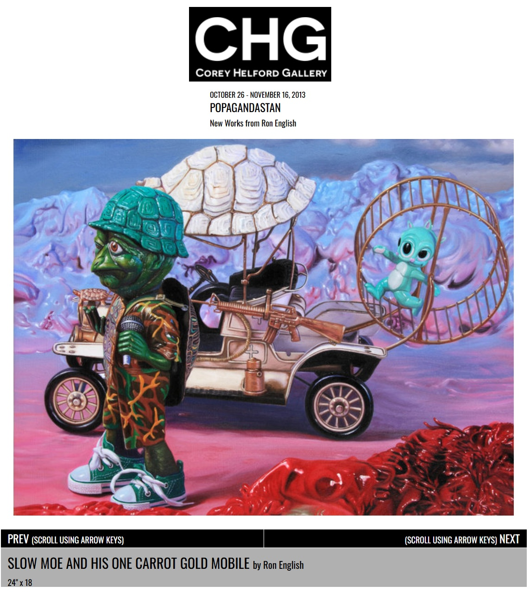
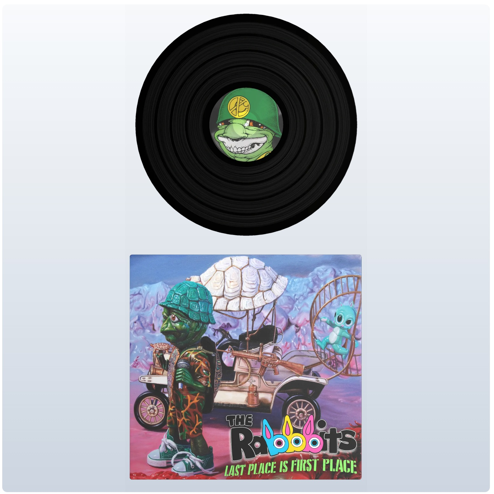

Exhibitions
POPAGANDASTAN – New Works from Ron English, Corey Helford Gallery, Los Angeles, California, US, October 26–November 16, 2013.
Literature
Ron English, Fauxlosophy: The Art of Ron English (San Francisco: Last Gasp, 2016), p. 110. ISBN 978-0867196566.
Notes
This work appears on Corey Helford Gallery’s artwork page for Ron English’s POPAGANDASTAN, where the object-page title is given as Slow Moe and His One Carrot Gold Mobile.
A reference set assembled by Ron English is retained as supporting documentation for this work.
The image later appears on VeVe’s digital collectible page for Ron English’s Delusionville Record S6 “Last Place is First Place” - Original. The provided documentation identifies it as a Common, First Edition digital collectible with 1,200 rarity editions, Drop Date June 21, 2025, 8 AM PT, List Price 6.99, Brand: Ron English’s Popaganda, and Series: Delusionville Record S6.
The work also appears in selected online features and previews related to Ron English and POPAGANDASTAN.
Ancillary Documentation
The following materials document the work through gallery artwork-page documentation, reference material assembled by Ron English, and later digital-collectible documentation.



Selected Online Circulation
Selected online documentation related to this work and its exhibition or later circulation. This list is not exhaustive.